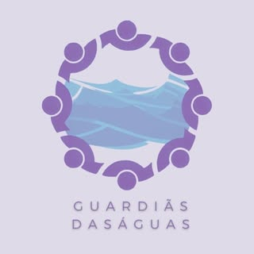

🎬 Trailer Oficial
📸 Conteúdo Relacionado



Projeto de proteção e conservação das águas
Projeto Saga Senai
Este projeto é uma iniciativa de desenvolvimento de um jogo de aventura inspirado na mitologia indígena brasileira, com o objetivo de promover a conscientização sobre a importância da preservação dos recursos hídricos e a valorização da cultura indígena.
O Game "Mythos" é um jogo de aventura que se inspira nas narrativas da cultura indígena brasileira. O jogador acompanha Yandara, a guardiã das águas, em sua missão de proteger os rios sagrados contra as forças que ameaçam o equilíbrio da natureza.
🎯 Objetivo do jogo:
Conscientizar sobre a preservação das águas através da cultura indígena.
👥 Público-alvo:
Jovens e adultos interessados em jogos de aventura e cultura brasileira.
🎮 Motor de Jogo:
Godot
⚔️ Gênero:
Aventura e RPG
🐍 Linguagem:
GDScript (similar a Python)
💻 Plataformas:
Windows, Linux e macOS
🌎 Contexto cultural:
Mitologia indígena brasileira e lendas populares
Área 404 - Desenvolvimento de Jogos
👨💻 Alunos:
- Abel Filipe Cardoso Cândido
- Lais Barbosa Santos
- Mykael José Rodrigues Lima
- Matheus Barroso Silva
- Sophia Alves de Araujo e Lima
👨🏫 Orientador: Professor Lucas da Silva Lopes
📚 Área de Atuação:
Programação de Jogos Digitais - Senai Uberlândia
Demanda:
Estratégia digital para divulgação da temática saneamento básico e recursos hídricos do projeto guardiãs das águas para
comunidades e escolas
Descrição resumida:
Estratégia digital integrada para ampliar a visibilidade do projeto Guardiãs das Águas, promovendo o acesso da comunidade e escolas à educação ambiental. A iniciativa inclui divulgação de conteúdos sobre saneamento, recursos hídricos, resíduos, qualidade ambiental, eventos, vídeos, projetos das alunas, canais de denúncia, contatos úteis e o protagonismo feminino na ciência e na sustentabilidade.
A água sagrada recupera vida e aumenta seu poder temporariamente.
Limpe nascentes poluídas para restaurar o equilíbrio da natureza.
Derrote espíritos das trevas usando seus poderes aquáticos.
Descubra áreas secretas e desbloqueie novos caminhos.
Iniciante: Poder básico de purificação
Aprendiz: Desbloqueia corrida e pulo duplo
Guardiã: Ataque em área e escudo d'água
Mestra: Invoca espíritos protetores
Lenda: Forma aquática suprema
SO: Windows 10 64-bit
Processador: Intel i3 / AMD equivalente
Memória: 6 GB RAM
GPU: GTX 600 ou Radeon HD 7000
DirectX: 11
Armazenamento: 50 GB
SO: Windows 10/11 64-bit
Processador: Intel i7 / Ryzen 5
Memória: 8 GB RAM
GPU: GTX 1060 / RX 6400
DirectX: 11
Armazenamento: 50 GB SSD
Protótipo básico com mecânicas fundamentais de movimento e interação.
Sistema completo de mapa, permitindo navegação pelos rios sagrados e regiões da floresta.
Demo jogável com 3 fases completas, inimigos básicos e desafios ambientais.
Compatibilidade melhorada com diferentes hardwares e correção de bugs.
Versão final com todas as fases desbloqueadas, cutscenes completas e conquistas.